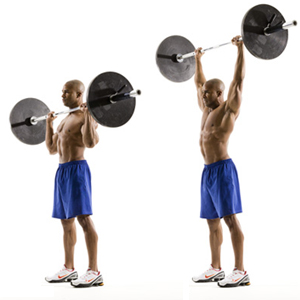
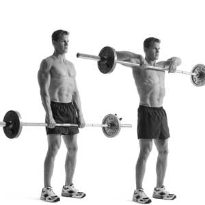
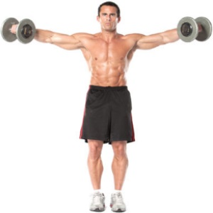
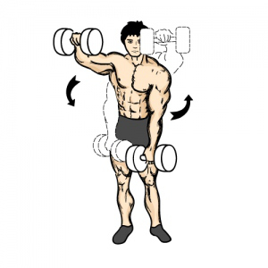
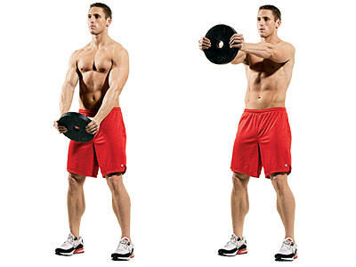

Training the shoulders is painful, yet very rewarding. In most cases, 8-12 will be sufficient. some of the lifts would be better with 5-6 reps, especially the heavier lifts. The following lifts/exercises are the most common and favourable shoulder exercises.
Overhead Press - lifting above your head with the grip just wider than shoulder length
Barbell upright row - Close-grip; placing hands no further than 6 inches apart on the bar, raising the bar to your chin
Dumbell side raises - have one dumbbell in each hand at your side and raise until the dumbbells are parallel to the ground
Dumbbell front raises - hold one dumbbell in each hand and raise the dumbbells infront of your body with a straight arm until 90 degrees away from your body
Plate raises - lift a weight plate with your arms at the widest point of the plate and lift it until it's at shoulder height and slowly lower to your waist
